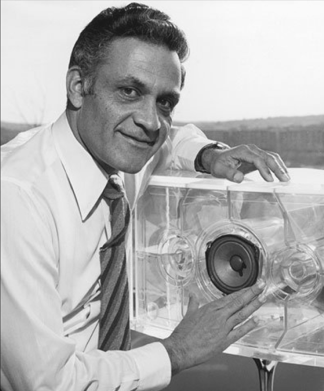

The history of Bose Corporation began with disappointment. In 1956, MIT graduate student Amar Bose bought one of the best stereo systems at the time for his home. After a few minutes of listening to the audio recording, his bewilderment turned to disappointment.
From Amar's point of view, the sound was so flat and unnatural that it was better not to listen to the music at all than to listen to it in such a distorted form.
Bose's frustration grew into a firm determination to build audio equipments that would reproduce sound with impeccable accuracy and naturalness